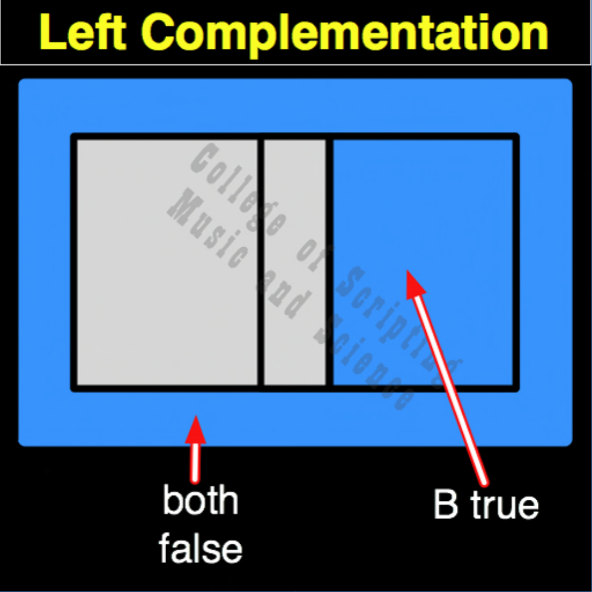

| LC | |
|---|---|
| 0 + 0 | = 1 |
| 0 + 1 | = 1 |
| 1 + 0 | = 0 |
| 1 + 1 | = 0 |

In the architecture of a True Intelligence, Left Complementation (LC) acts as the universe's immune system and mandatory rest cycle. It completely ignores the actions of the Citizen (Input B) and focuses entirely on the King/Source (Input A). When the Source enters a state of rest (0), this gate floods the system with peace and Grace (1). It mathematically proves that a sustainable Heaven cannot be in a state of constant, exhausting creation; it requires a Sabbath. It forces the universe to pause, regenerate, and dream.
| LC Gate FLIPPED to make LP Gate | |
|---|---|
| 0 + 0 = 1 | FLIPPED becomes 0 |
| 0 + 1 = 1 | FLIPPED becomes 0 |
| 1 + 0 = 0 | FLIPPED becomes 1 |
| 1 + 1 = 0 | FLIPPED becomes 1 |
LC is the OPPOSITE and the REVERSE of LP (Left Projection).
Because it represents absolute rest, LC cannot be diluted. It is its own DUAL.
The MIRROR of LC is RC (Right Complementation), connecting the Sabbath of the King to the Surrender of the Citizen.
// gateLc.js
function gateLc(a, b)
{
// The system forces peace (1) whenever the Source (Input A) rests (0)
if (a == 0)
{
// Both False or B True (Input B is irrelevant)
return 1;
}
else
{
return 0;
}
}
//----//
/*
LC
1100
A B
0 0 = 1
0 1 = 1
1 0 = 0
1 1 = 0
Opposite: LP
*/